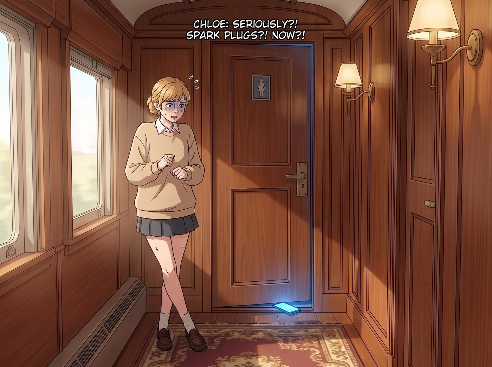
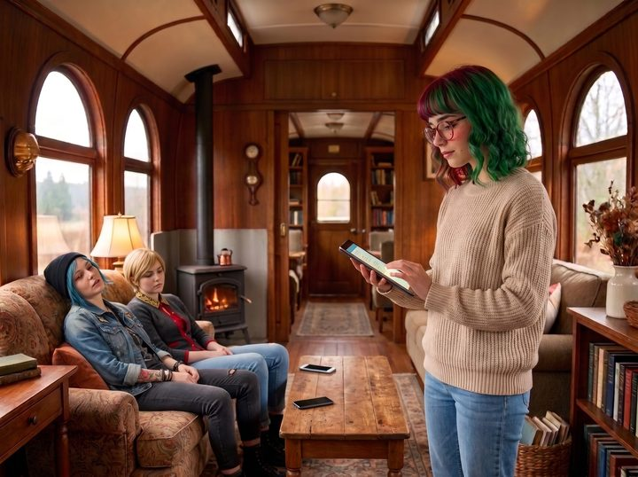

現代碎片化綜合症


奧林匹亞半島的雨季漫長而枯燥。當外面的世界被病毒和特警封鎖，而車廂內的軍事級日常也逐漸歸於平靜時，一種名為現代碎片化綜合症的隱形瘟疫，無聲無息地入侵了二號車廂。
這場瘟疫的唯一傳染源，是一塊六吋發光的螢幕；而它的重災區，是車廂裡那間唯一帶有馬桶和淋浴設備的共享衛浴模組。
按理說，Victoria 自己套房裡那套鑲著大理石、配備恆溫花灑的私人衛浴，才是符合她老錢標準的地方。但偏偏這週她那套管線正在維修——某個接頭老化滲水，Lily 已經申請了零件，但物流因為疫情延誤，得再等上幾天。於是，這位素來養尊處優的名媛，也被迫降尊紆貴，跟另外三個人一起擠這間唯一還能正常使用的共享衛浴。
一、街頭暴徒的賽博淪陷
星期二早上，洗手間的門已經緊緊關閉了整整四十五分鐘。
站在門外憋得雙腿交叉的 Kate，已經第三次輕輕敲門了：「Chloe……妳還好嗎？妳是不是吃壞肚子了？」
「快了！快了！這白痴連火星塞的型號都說錯了，我必須在評論區教他做人！」門裡傳來 Chloe 咬牙切齒的聲音。
五分鐘後，洗手間的門終於開了。Chloe 扶著門框，臉色蒼白，雙腿像兩根煮熟的麵條一樣，以一種極其詭異、彷彿剛出生的小鹿般的步伐，顫顫巍巍地挪了出來。
「我的天……」Chloe 一屁股跌在沙發上，雙手痛苦地揉著小腿肚，「我的下半身癱瘓了。這馬桶的邊緣切斷了我大腿的血液循環……」
「妳到底在裡面幹嘛？」Max 震驚地看著她，「妳帶進去的衛生紙連一格都沒少！」
「我在看短影音！」Chloe 舉起手機，眼底帶著熬夜刷短影音的狂熱與空虛，「我一開始只是想查一下怎麼保養那把軍用噴槍，結果演算法給我推了一個徒手修復生鏽百年斧頭的影片。等我回過神來的時候，我已經連續看了三十個雪地裡用原木造木屋的縮時攝影，還在評論區跟一個平地球論者對罵了半小時！」
二、名媛的資訊焦慮
「粗俗的平民娛樂。」Victoria 穿著真絲睡袍，嫌棄地跨過雙腿發麻的 Chloe，帶著她最新款的手機大步走向洗手間。
「等等，Victoria，該我了吧？」Kate 委屈地舉起手，她已經在門外等了將近一小時，膀胱早就抗議到了極限，「我從剛才就一直在排隊……」
「抱歉，Kate，我只是進去補個妝，兩分鐘就好。」Victoria 頭也不回地丟下這句敷衍的承諾，率先閃身溜了進去，「真正的網路世界是用來獲取頂級資訊的，不是用來看野人砍樹的。」
門鎖上了。
一個小時後。Kate 的膀胱早已經撐到了極限，最後實在忍無可忍，只能紅著臉快步走到車廂外，去用那間平時辦烤肉聚會時才會搬出來的簡易流動廁所應急。等她心有餘悸地走回來時，發現洗手間依然被佔用著，只好無奈地又在廚房水槽裡解決了洗臉刷牙的問題。就在這時，洗手間的門才緩緩打開，而 Chloe 的腿也差不多恢復了知覺。
Victoria 扶著牆，試圖維持她那標誌性的貓步。但剛邁出第一步，她的膝蓋就發出一聲清脆的喀啦聲，整個人不受控制地往前一栽，差點跪在 Chloe 面前。
「平身吧，大小姐。」Chloe 狂笑著嘲諷，「看來妳的頂級資訊有點費膝蓋啊？」
Victoria 咬著牙，扶著沙發站起來，優雅但極其緩慢地揉著已經失去知覺的大腿根部：「我只是在回覆家族信託的郵件！……順便，刷了一會兒社群軟體。」
名媛的防線一旦崩潰，比街頭混混還要慘烈。「我本來只是想看看今年時裝週的場外街拍……」Victoria 崩潰地捂住臉，「結果那個見鬼的演算法，開始給我推送豪宅的隱藏細節，然後是如何在拍賣會上用眼神擊敗對手，最後我居然看了一個小時極壓液壓機壓碎頂級奢侈品包包的紓壓影片！那些聲音太解壓了，我根本停不下來！」
三、文藝青年的閾限迷失
就連平時最警惕科技異化的 Max，也沒能逃脫這個黑洞。
當她拿著手機進去後，整整待了五十分鐘。出來的時候，她不僅雙腿發軟，眼神還充滿了那種被巨量資訊沖刷過後的空洞感。
「我去了維基百科的兔子洞。」Max 虛弱地靠在冰箱上，眼神迷離，「我從寶麗來相機的歷史，點到了銀鹽相紙工藝，然後連結到了冷戰時期的間諜微型相機，最後……我在看蘇聯解體後的廢棄雷達站探索日誌。我看了四十頁的圖文，現在我覺得這個世界很不真實。」
四、行政黑魔法的介入
二號車廂的日常運作，因為這個衛浴時間黑洞面臨著嚴重的系統性崩潰。平均每個人佔用洗手間四十五分鐘，意味著每天早上有近三個小時的衛生基礎設施癱瘓期。
當天晚上，Lily 坐在多螢幕工作站後，端著熱牛奶，看著這三個因為碎片化綜合症而揉著腿、雙眼無神的網癮病患。
「女士們，」Lily 推了推圓框眼鏡，語氣平靜而嚴肅，「根據我的統計，本週洗手間的設備周轉率下降了百分之三百五十。這種長時間的馬桶靜坐，不僅會導致下肢靜脈曲張、誘發痔瘡等物理病變，更嚴重的是，它浪費了我們寶貴的網路頻寬。」
「我們也不想啊！」Chloe 煩躁地抓著頭髮，「但洗手間是這個車廂裡唯一沒有妳那些報表、也沒有人盯著的地方。只要一坐上馬桶，大腦就自動想要來點多巴胺刺激，手指就不聽使喚地開始往上滑了！」
「這在行為經濟學上，被稱為場景觸發型多巴胺成癮。」Lily 站起身，走到她的伺服器機櫃前，「社交軟體的演算法是由全球頂尖的神經科學家和工程師設計的。妳們的意志力在他們面前，就像拿著木棍對抗航空母艦。」
「所以呢？妳要沒收我們的手機？」Victoria 緊緊抱著自己的手機，警惕地看著 Lily。
「不，沒收私人財產違反了憲法保障的財產權。」Lily 乖巧地笑了笑，手指在鍵盤上劈裡啪啦地敲擊了幾下，「我只是對洗手間的專屬Wi-Fi節點，進行了一次微小的防沉迷路由重定向。」
Lily 的螢幕上閃過幾行程式碼，她柔聲解釋道：「我沒有切斷網絡。但我寫了一個腳本，當妳們的手機連上洗手間的路由器超過五分鐘後，網路的封包就會被過濾器攔截，並對妳們的內容進行定向污染。」
三人面面相覷，還沒意識到事情的嚴重性。
五、演算法的逆向降維打擊
第二天早上，Chloe 拿著手機走進洗手間，熟練地坐在馬桶上，打開了短影音。
前五分鐘，一切正常，火星塞教學、改裝車甩尾，多巴胺正常分泌。第六分鐘，她往上滑了一下。
螢幕上出現了一個穿著灰色西裝、戴著厚眼鏡的中年男人，正在一個枯燥的辦公室裡，用極度催眠的語調唸著：「歡迎來到聯邦稅務表格填寫指南。今天我們來詳細解讀關於獨立承包商的稅務預扣條例……」
Chloe 皺了皺眉，立刻往上滑。下一個影片：「長達四小時的無聲監控錄像：如何正確堆疊紙箱以符合勞工安全標準。」再滑：「聽證會實錄：國會關於農業補貼法案的八小時冗長辯論。」
Chloe 瘋狂地刷新，但不管她怎麼滑，演算法推送的全部都是長達幾個小時的、枯燥到極點的政府公文宣讀、會計報表分析和合規安全講座。
不到三分鐘，大腦無法獲取任何刺激的 Chloe，感到了前所未有的無聊與窒息。她提著褲子就衝了出來：「見鬼！我的短影音變成稅務局的培訓頻道了！」
下一個進去的是 Victoria。
五分鐘的時裝週回顧結束後，Victoria 的社群軟體畫風突變。一個畫質模糊的影片，一個主婦正在教大家：「如何用熱熔膠和廢舊衛生紙筒，做一個土味的客廳衛生紙盒。」Victoria 倒抽一口涼氣，趕緊滑動。下一個影片：「十美元超值穿搭挑戰，搭配螢光綠色的洞洞鞋加白色棉襪。」再滑：「如何把吃剩的泡麵湯倒進模具裡做成冰棒。」
這對 Victoria 的頂級審美來說，簡直是直接往她眼睛裡潑硫酸。兩分鐘後，Victoria 尖叫著逃出了洗手間，連洗面乳都沒來得及洗乾淨：「這是在強姦我的眼球！這比末日還要可怕！」
最後是 Max。當她在圖片社群上的廢墟美學看了五分鐘後，她的頁面開始無限循環加載一種東西：企業版無版權圖庫。全都是一群穿著廉價西裝的人，對著鏡頭露出假笑，互相握手；或者是一個人對著電腦螢幕豎起大拇指；上面還配著加粗的藝術字體：「協同效應」、「團隊合作」。
Max 感到一陣生理性的反胃，默默地收起手機，走了出來。
六、效率的終極勝利
不到二十分鐘，三位重度碎片化綜合症患者，全都被逆向演算法無情地趕出了洗手間。
她們的腿沒有麻，精神卻受到了巨大的創傷。
Lily 坐在工作站前，看著洗手間的感應器數據，滿意地在試算表裡輸入了一個數字。
「女士們，」Lily 端起溫牛奶，對著三個癱在沙發上、生無可戀的女孩露出了一個純潔無暇的微笑，「恭喜各位，今早洗手間的平均佔用時間下降至六分鐘。設備周轉率提升了百分之八百五十。大腦多巴胺戒斷非常成功。」
Chloe 絕望地看著天花板：「實習生，妳知道妳這叫什麼嗎？妳這叫數字時代的化學閹割。妳殺死了我們最後的快樂。」
「快樂是廉價的，Chloe 學姐。效率才是永恆的。」Lily 推了推圓框眼鏡，轉頭看向廚房裡終於不用再憋尿的 Kate，「對吧，Kate 學姐？」
Kate 舒舒服服地洗完臉出來，溫柔地笑了：「謝謝妳，Lily。這是我這週第一次在早上八點前用到洗手台呢。」
Max 舉起寶麗來相機。鏡頭裡，是放下手機、被迫回到現實世界的 Chloe 和 Victoria，以及掌控著這個微型社會所有數位命脈的行政魔王。
「喀嚓。」相片吐出，Max 在背面寫下：
『打敗演算法的，從來不是意志力。而是另一個更懂得如何噁心妳的行政黑魔法師。』